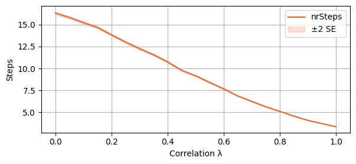
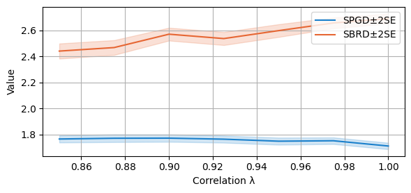
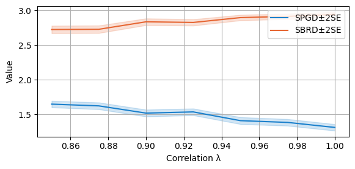

import numpy as np
import math
import matplotlib.pyplot as plt
from time import time
import scipy.stats as stats
from scipy.stats import beta
from functools import reduce
from operator import matmul Utility functions (please skip to the next section)
def softmax(r):
# Define a softmax function.
exp_r = np.exp(r - np.max(r))
return exp_r / np.sum(exp_r)
def gradient_ascent_dynamics(G, n, eta=1.0, max_iter=50_000, T_max=10):
# The following function implements a (softmax) gradient ascent algorithm for a 3-player game with n actions.
# It takes the number of actions n, a correlation parameter lam, a learning rate eta, a max iteration count,
# and a tolerance for convergence as inputs. It returns the average payoff, the number of iterations,
# and the final payoff for player 0.
t_0 = time()
# Initialise each player's "logit" vector (which will be mapped to a mixed strategy via softmax).
r0 = np.zeros(n)
r1 = np.zeros(n)
r2 = np.zeros(n)
total_payoff = 0.0
for it in range(max_iter):
# Convert logits to mixed strategies.
p0 = softmax(r0)
p1 = softmax(r1)
p2 = softmax(r2)
# Compute the expected payoff for each pure action for each player.
# For player 0: Q0[i] = sum_{j,k} p1[j] p2[k] G[0][i, j, k]
Q0 = np.array([np.dot(p1, np.dot(G[0][i, :n, :n], p2)) for i in range(n)])
# For player 1: Q1[i] = sum_{j,k} p0[j] p2[k] G[1][j, i, k]
Q1 = np.array([np.dot(p0, np.dot(G[1][:n, i, :n], p2)) for i in range(n)])
# For player 2: Q2[i] = sum_{j,k} p0[j] p1[k] G[2][j, k, i]
Q2 = np.array([np.dot(p0, np.dot(G[2][:n, :n, i], p1)) for i in range(n)])
# Compute the overall expected payoff for each player.
f0 = np.dot(p0, Q0)
f1 = np.dot(p1, Q1)
f2 = np.dot(p2, Q2)
# Accumulate payoff for averaging.
total_payoff += f0
# Every 100 iterations, check if the current strategy profile is an epsilon-NE.
if it % 100 == 0:
best0 = np.max(Q0)
best1 = np.max(Q1)
best2 = np.max(Q2)
if ((f0 >= 0.99 * best0) and (f1 >= 0.99 * best1) and (f2 >= 0.99 * best2)) or (time()-t_0 > T_max):
break
grad_r0 = Q0 - f0
grad_r1 = Q1 - f1
grad_r2 = Q2 - f2
# Update the logits using a simple gradient ascent step.
r0 += eta * grad_r0
r1 += eta * grad_r1
r2 += eta * grad_r2
avg_payoff = total_payoff / it
return it, avg_payoff, f0
# Hyperparameters for gradient ascent. These numbers have been selected after some trial and error, and provided the best results for this algorithm.
step_size = 1.0
max_iterations = 50_000These are utility function only used to plot
def clopper_pearson_interval(k, n, alpha=0.005):
lower = beta.ppf(alpha / 2, k, n - k + 1) if k > 0 else 0.0
upper = beta.ppf(1 - alpha / 2, k + 1, n - k) if k < n else 1.0
return lower, upper
def plot_single_algorithm(alg_name="SBRD", varName="time", ylabel=None, axis=0, mean_name=None, variance=True, only_if_conv=False, log=False, n_cols=1, number_of_plots=-1, binomial=False, isPositive=False, width=6, legend_loc = "upper left", title=None):
"""
Plot runtimes of a single algorithm (PGD or SBRD) in subplots, comparing across one parameter.
Parameters:
- alg_name: 'PGD' or 'SBRD'
- varName: variable name suffix for accessing data (e.g., "Seconds" accesses PGD_Seconds or SBRD_Seconds)
- axis: 0 or 1
- 0: compare across N for each Lambda (row-wise)
- 1: compare across Lambda for each N (column-wise)
- variance: whether to include standard deviation shading
- only_if_conv: whether to only include data when convergence was achieved (using *_isNash)
- log: whether to plot on a log scale
- n_cols: number of columns of subplots to create
- number_of_plots: number of subplots to show (-1 for all)
- lambda_vals: optional list/array of Lambda values
- A_vals: optional list/array of N values
- binomial: whether the data is binomial (0-1 values)
"""
if ylabel == None:
ylabel = varName
# If the function input "only_if_conv" is True, only include the cases in which the samples for which algorithm converges
data = globals()[f"{alg_name}_{varName}"]
if only_if_conv:
isNash = globals()[f"{alg_name}_isNash"]
masked_data = np.where(isNash, data, np.nan)
else:
masked_data = data
"""
Creates the matrix of means and the matrices needed for the Confidence Intervals.
If the data is Binary, the CI is done using the Clopper Pearson interval. If the data is real, we use the Standard Error
"""
mean_data = np.nanmean(masked_data, axis=-1)
if variance:
n_data = np.sum(~np.isnan(masked_data), axis=-1)
if binomial:
sum_data = np.nansum(masked_data, axis=-1)
lower_bounds = np.zeros_like(mean_data)
upper_bounds = np.ones_like(mean_data)
for i in range(mean_data.shape[0]):
for j in range(mean_data.shape[1]):
if n_data[i, j] > 0:
lower, upper = clopper_pearson_interval(int(sum_data[i, j]), int(n_data[i, j]))
lower_bounds[i, j] = lower
upper_bounds[i, j] = upper
else:
SE_data = np.sqrt(np.divide(np.nanvar(masked_data, axis=-1), n_data))
L, N = mean_data.shape
"""
Depending on wether we want the plots to be done along the 0 or 1 axis, we get different "get_mean", "get_lower" and "get_upper"
functions, that take as input i and return the right vector (respectively the mean, lower and upper CI points) with that index.
"""
if axis == 0:
num_plots = L
x_vals = A_vals
y_vals = lambda_vals
get_mean = lambda i: mean_data[i, :]
if variance:
if binomial:
get_lower = lambda i: lower_bounds[i, :]
get_upper = lambda i: upper_bounds[i, :]
else:
get_var = lambda i: SE_data[i, :]
label = "Correlation λ"
xlabel = "Nr. actions"
elif axis == 1:
num_plots = N
x_vals = lambda_vals
y_vals = A_vals
get_mean = lambda i: mean_data[:, i]
if variance:
if binomial:
get_lower = lambda i: lower_bounds[:, i]
get_upper = lambda i: upper_bounds[:, i]
else:
get_var = lambda i: SE_data[:, i]
label = "Nr. actions"
xlabel = "Correlation λ"
else:
raise ValueError("Axis must be 0 (over Lambda) or 1 (over N)")
"""
We now create the structure for the plots
"""
if number_of_plots == -1 or number_of_plots >= num_plots:
indices = list(range(num_plots))
else:
indices = np.linspace(0, num_plots - 1, number_of_plots, dtype=int)
n_rows = math.ceil(len(indices) / n_cols)
fig, axes = plt.subplots(n_rows, n_cols, figsize=(width * n_cols, 3 * n_rows), sharex=True)
axes = np.array(axes).flatten()
color = (0.1, 0.5, 0.8) if alg_name == "PGD" else (0.9, 0.4, 0.2)
"""
We finally plot the various graphs
"""
for i, idx in enumerate(indices):
ax = axes[i]
ax.set_xlabel(xlabel)
if log:
ax.set_yscale('log')
ydata = get_mean(idx)
ymin = np.nanmin(ydata)
ymax = np.nanmax(ydata)
# Round to nearest powers of 10
lower = 10 ** np.floor(np.log10(ymin))
upper = 10 ** np.ceil(np.log10(ymax))
ax.set_ylim(lower, upper)
ax.plot(x_vals, get_mean(idx), color=color, label=mean_name if mean_name!= None else varName)
if variance:
if binomial:
ax.fill_between(x_vals, get_lower(idx), get_upper(idx), color=color, alpha=0.2, label='99.5% CI')
else:
if isPositive:
lower = np.clip(get_mean(idx) - 2*get_var(idx), 0, None)
upper = np.clip(get_mean(idx) + 2*get_var(idx), 0, None)
ax.fill_between(x_vals, lower, upper, color=color, alpha=0.2, label='±2 SE')
ax.set_ylabel(ylabel)
if title == None:
ax.set_title(f"{label} = {round(y_vals[idx], 2)}, samples = {samples}")
else:
ax.set_title(title)
ax.legend(loc=legend_loc)
ax.grid(True)
for j in range(len(indices), len(axes)):
fig.delaxes(axes[j])
plt.tight_layout(rect=[0, 0, 1, 0.96])
plt.savefig(f"{alg_name}_{varName}_samples={samples} axis={axis}.pdf")
plt.show()
def compare_algorithms(PGD_varName="time", SBRD_varName="time", yLabel=None, axis=0, mean_1_name=None, mean_2_name=None, title=None, variance=True, only_if_conv=False, log=False, n_cols=1, number_of_plots=-1, binomial=False, width = 6, isPositive=False, legend_loc="upper left", expnr = "3"):
"""
Plot runtimes of PGD and SBRD algorithms in subplots, comparing them across one parameter.
Parameters:
- PGD_varName, SBRD_varName: variable name suffix for accessing data (e.g., "time" accesses PGD_time and SBRD_time)
- axis: 0 or 1
- 0: compare across N for each Lambda (row-wise)
- 1: compare across Lambda for each N (column-wise)
- variance: whether to include standard deviation shading
- only_if_conv: whether to only include data when convergence was achieved (using PGD_isNash, SBRD_isNash)
- log: whether to plot on a log scale
- n_cols: number of columns of subplots to create
- lambda_vals: global list/array of Lambda values
- A_vals: global list/array of N values
- number_of_plots: number of subplots to display (equally spaced). If -1, show all.
- binomial: whether the data is binomial (0-1)
- isPositive: whether to clip the lower bound at 0
"""
if yLabel == None:
yLabel = PGD_varName
def process_data(alg_name, varName):
data = globals()[f"{alg_name}_{varName}"]
if only_if_conv:
isNash = globals()[f"{alg_name}_S{expnr}_isNash"]
data = np.where(isNash, data, np.nan)
mean_data = np.nanmean(data, axis=-1)
n_data = np.sum(~np.isnan(data), axis=-1)
if not variance:
return mean_data, None, None
if binomial:
sum_data = np.nansum(data, axis=-1)
lower_bounds = np.zeros_like(mean_data)
upper_bounds = np.ones_like(mean_data)
for i in range(mean_data.shape[0]):
for j in range(mean_data.shape[1]):
if n_data[i, j] > 0:
lower, upper = clopper_pearson_interval(int(sum_data[i, j]), int(n_data[i, j]))
lower_bounds[i, j] = lower
upper_bounds[i, j] = upper
return mean_data, lower_bounds, upper_bounds
else:
SE = np.sqrt(np.nanvar(data, axis=-1) / n_data)
lower_bounds = mean_data - 2 * SE
upper_bounds = mean_data + 2 * SE
return mean_data, lower_bounds, upper_bounds
PGD_mean, PGD_lower, PGD_upper = process_data("PGD", PGD_varName)
SBRD_mean, SBRD_lower, SBRD_upper = process_data("SBRD", SBRD_varName)
L, N = PGD_mean.shape
if axis == 0:
num_plots = L
x_vals = A_vals
y_vals = lambda_vals
get_slice = lambda data, i: data[i, :]
label = "Correlation λ"
xlabel = "Nr. actions"
elif axis == 1:
num_plots = N
x_vals = lambda_vals
y_vals = A_vals
get_slice = lambda data, i: data[:, i]
label = "Nr. actions"
xlabel = "Correlation λ"
else:
raise ValueError("Axis must be 0 (over Lambda) or 1 (over N)")
indices = range(num_plots) if number_of_plots == -1 or number_of_plots >= num_plots else np.linspace(0, num_plots - 1, number_of_plots, dtype=int)
n_rows = math.ceil(len(indices) / n_cols)
fig, axes = plt.subplots(n_rows, n_cols, figsize=(width * n_cols, 3 * n_rows), sharex=True)
axes = np.array(axes).flatten()
colors = {"PGD": (0.1, 0.5, 0.8), "SBRD": (0.9, 0.4, 0.2)}
for i, idx in enumerate(indices):
ax = axes[i]
ax.set_xlabel(xlabel)
if log:
ax.set_yscale('log')
for name, mean, lower, upper, color in [
("PGD", PGD_mean, PGD_lower, PGD_upper, colors["PGD"]),
("SBRD", SBRD_mean, SBRD_lower, SBRD_upper, colors["SBRD"])
]:
y = get_slice(mean, idx)
if variance:
if binomial:
if name == "PGD":
curr_label = mean_1_name
if name == "SBRD":
curr_label = mean_2_name
else:
if name == "PGD":
curr_label = mean_1_name
if name == "SBRD":
curr_label = mean_2_name
ax.plot(x_vals, y, label=curr_label, color=color)
if variance and lower is not None and upper is not None:
y_lower = get_slice(lower, idx)
y_upper = get_slice(upper, idx)
if isPositive:
y_lower = np.clip(y_lower, 0, None)
y_upper = np.clip(y_upper, 0, None)
#label_ci = "99.5% CI" if binomial else "±2SE"
ax.fill_between(x_vals, y_lower, y_upper, color=color, alpha=0.2)#, label=f"{label_ci}")
ax.set_ylabel(yLabel)
if title == None:
ax.set_title(f"{label} = {round(y_vals[idx], 2)}, samples = {samples}")
else:
ax.set_title(title)
ax.legend(loc= legend_loc)
ax.grid(True)
for j in range(len(indices), len(axes)):
fig.delaxes(axes[j])
plt.tight_layout(rect=[0, 0, 1, 0.96])
plt.savefig(f"compare_{PGD_varName}_axis={axis}.pdf")
plt.show()Dynamics definitions
def generate_reward_matrix(P, A, lam):
"""
Generate the reward matrix for an P-player A-actions game
Parameters:
- N (int): Number of actions per player.
- lam (float): Correlation between players' payoffs.
Returns:
- np.ndarray: Reward tensor G of shape (3, N, N, N). Each entry G[i, a, b, c]
is the payoff for player i when players 1, 2, 3 play actions a, b, c respectively.
"""
# Correlation matrix across players
diagonal = np.diag(np.ones(P))
ones_matrix = np.ones((P, P))
corr_matrix = (ones_matrix-np.diag(np.diag(ones_matrix)))*lam+diagonal
# Cholesky decomposition for generating correlated normal variables
L = np.linalg.cholesky(corr_matrix)
# Generate correlated payoffs for all joint action profiles
raw_samples = np.random.randn(P, A**P)
correlated = L @ raw_samples
shape = tuple(P if i==0 else A for i in range(P+1))
# Reshape to (3, N, N, N): one payoff matrix per player
return correlated.reshape(shape)def best_response_dynamics(G, A=None):
"""
Simulate Best Response Dynamics (SBRD) in a 3-player game.
Parameters:
- G (np.ndarray): Reward tensor of shape (3, N, N, N). G[i, a, b, c] gives the payoff
to player i when players 0, 1, 2 choose actions a, b, c respectively.
Returns:
- cycle_length (int): Length of the cycle detected by SBRD.
- total_steps (int): Total number of steps before entering the cycle.
- final_payoff (float): Average payoff for player 0 over the detected cycle.
"""
P = G.shape[0]
if A == None:
A = G.shape[1]
x = tuple(0 for _ in range(P)) # Initial strategy profile
index = 0 # Step counter
history = dict() # Maps strategy profiles to step indices
while True:
index += 1
# Best responses given others' actions
x = tuple( np.argmax( G[ tuple(i if j == 0 else x[j-1] if j-1 != i else slice(0, A) for j in range(P+1)) ] ) for i in range(P))
if x in history:
cycle_length = index - history[x]
if cycle_length == 1:
# Nash Equilibria
return cycle_length, index, G[tuple(0 if i == 0 else x[i-1] for i in range(P+1))]
# General cycle detected: compute average payoff for player 0
cycle = [x]
avg = G[tuple(0 if i == 0 else x[i-1] for i in range(P+1))]
for _ in range(cycle_length - 1):
x = tuple( np.argmax( G[ tuple(i if j == 0 else x[j-1] if j-1 != i else slice(0, A) for j in range(P+1)) ] ) for i in range(P))
cycle.append(x)
avg += G[tuple(0 if i == 0 else x[i-1] for i in range(P+1))]
return cycle_length, index, avg / cycle_length
# Log the current profile and continue
history[x] = indexdef softmax(r):
# Define a softmax function.
exp_r = np.exp(r - np.max(r))
return exp_r / np.sum(exp_r)def new_SPGD(G, eta=1.0, max_iter=50_000, T_max=10):
# The following function implements a (softmax) gradient ascent algorithm for a 3-player game with n actions.
# It takes the number of actions n, a correlation parameter lam, a learning rate eta, a max iteration count,
# and a tolerance for convergence as inputs. It returns the average payoff, the number of iterations,
# and the final payoff for player 0.
t_0 = time()
# Initialise each player's "logit" vector (which will be mapped to a mixed strategy via softmax).
P, A = G.shape[0:2]
R = tuple(np.zeros(A) for _ in range(P))
total_payoff = 0.0
n=A
p=[3 for i in range(P)]
for it in range(max_iter):
# Convert logits to mixed strategies.
Softmax = tuple(softmax(R[i]) for i in range(P))
# Compute the expected payoff for each pure action for each player.
# For player 0: Q0[i] = sum_{j,k} p1[j] p2[k] G[0][i, j, k]
Q = tuple( # Q[0], …, Q[P-1]
np.array([ # each is an (A, …, A) tensor
np.take(G[p], i, axis=p) # fix the i-th action of player p
@ reduce(matmul, # multiply all the other Softmax mats
(Softmax[j] for j in range(P) if j != p))
for i in range(A)])
for p in range(P))
# For player 1: Q1[i] = sum_{j,k} p0[j] p2[k] G[1][j, i, k]
# Compute the overall expected payoff for each player.
F = tuple(np.dot(Softmax[i], Q[i]) for i in range(P))
# Accumulate payoff for averaging.
total_payoff += F[0]
# Every 100 iterations, check if the current strategy profile is an epsilon-NE.
if it % 100 == 0:
best = tuple(np.max(Q[i]) for i in range(P))
if (min(best)>0.99) or (time()-t_0 > T_max):
break
grad = tuple(Q[i]-F[i] for i in range(P))
# Update the logits using a simple gradient ascent step.
R = tuple(R[i]+eta*grad[i] for i in range(P))
avg_payoff = total_payoff / it
return it, avg_payoff, F[0]Main Results
Section 1. Finding: 2-player random potential games converge fast to a two-cycle
Setting of the experiment: - 10000 independent simulations - Each simulation takes lambda in a range of values between 0 and 1 - The number of actions is set to 50 - The number of players is set to two
Statistics analysed: - SBRD_S1_twoCycles[l, 0, t]: True if the t-th test with the l-th value of lambda converges to a 2-cycle - SBRD_S1_nrSteps[l, 0, t]: number of steps to convergence (or cycle) of the t-th test with the l-th value of lambda
# Number of simulations per (λ, N) setting
samples = 10_000
lambda_vals = [0.09999999999*0.5*i for i in range(21)]
A_vals = [50]
SBRD_S1_twoCycles = np.full((len(lambda_vals), 1, samples), False, dtype=bool)
SBRD_S1_nrSteps = np.zeros((len(lambda_vals), len(A_vals), samples))We now run the experiment, setting the numpy random seed to 2025. We print the time it takes to run the whole experiment in seconds.
np.random.seed(2025) #We set the random seed for reproducibility
T_0 = time() # Start timer for entire experiment
max_A = max(A_vals)
for count_lam, lam in enumerate(lambda_vals): # Loop over each lambda value
for i in range(samples): # Repeat experiment for statistical robustness
G = generate_reward_matrix(2, max_A, lam) # Generate a payoff matrix with max_n actions and correlation lambda
for count_A, A in enumerate(A_vals): # Now restrict to smaller N if needed
# Run Best Response Dynamics and time it
SBRD_len, SBRD_it, SBRD_val_curr = best_response_dynamics(G, A)
SBRD_S1_twoCycles[count_lam, count_A, i] = (SBRD_len == 2)
SBRD_S1_nrSteps[count_lam, count_A, i] = SBRD_it
# Final time report
Total_time = time() - T_0
print(Total_time)23.52963089942932We now begin to plot our results. The first plot represents the probability of SBRD to converge to a 2-cycle. It is plotted with a 99.5% Clopper-Pearson CI.
plot_single_algorithm(alg_name="SBRD", varName="S1_twoCycles", title="", mean_name="Prob", ylabel="Prob. conver. to two-cycle", axis=1, binomial=True, legend_loc="upper left")The second plot represents the average number of steps before convergence. It is plotted with a 2SE interval around the mean.
plot_single_algorithm(alg_name="SBRD", varName="S1_nrSteps", mean_name="nrSteps", title="", ylabel="Steps", axis=1, isPositive=True, log=False, legend_loc="upper right")
With the following script, we investigate the thresholds of lambda for which the probability of SBRD to converge to a 2-cycle surpasses 50% and 90% respectively. Which is, we find that if lambda is at least 0.55, then the probability of SBRD to converge to a 2-cycle is at least 50%. If lambda is at least 0.9, the probability is at least 90%.
print(round(lambda_vals[int(np.argmax(np.mean(SBRD_S1_twoCycles, axis=-1)>0.5))],2))
print(round(lambda_vals[int(np.argmax(np.mean(SBRD_S1_twoCycles, axis=-1)>0.9))],2))0.55
0.9Section 2. Finding: 3-player random potential games converge fast to a NE
We now consider the setting with three players. Setting of the experiment: - 10000 independent simulations - Each simulation takes lambda in a range of values between 0 and 1 - The number of actions is set to 50 - The number of players is set to three
Statistics analysed: - SBRD_S2_isNash[l, 0, t]: True if the t-th test with the l-th value of lambda converges to a NE - SBRD_S2_nrSteps[l, 0, t]: number of steps to convergence (or cycle) of the t-th test with the l-th value of lambda
# Number of simulations per (λ, N) setting
samples = 10_000
lambda_vals = [0.09999999999*0.5*i for i in range(21)]
A_vals = [50]
SBRD_S2_isNash = np.full((len(lambda_vals), 1, samples), False, dtype=bool)
SBRD_S2_nrSteps = np.zeros((len(lambda_vals), len(A_vals), samples))We now run the experiment, setting the numpy random seed to 2025. We print the time it takes to run the whole experiment in seconds.
np.random.seed(2025) #We set the random seed for reproducibility
T_0 = time() # Start timer for entire experiment
max_A = max(A_vals)
for count_lam, lam in enumerate(lambda_vals): # Loop over each lambda value
for i in range(samples): # Repeat experiment for statistical robustness
G = generate_reward_matrix(3, max_A, lam) # Generate a payoff matrix with max_n actions and correlation lambda
for count_A, A in enumerate(A_vals): # Now restrict to smaller N if needed
# Run Best Response Dynamics and time it
SBRD_len, SBRD_it, SBRD_val_curr = best_response_dynamics(G, A)
SBRD_S2_isNash[count_lam, count_A, i] = (SBRD_len == 1)
SBRD_S2_nrSteps[count_lam, count_A, i] = SBRD_it
# Final time report
Total_time = time() - T_0
print(Total_time)1237.7669422626495We are now ready to plot our results. We first plot the probability of SBRD to converge to a NE. We plot a 99.5% Clopper-Pearson CI
plot_single_algorithm(alg_name="SBRD", varName="S2_isNash", title="", mean_name="isNash", ylabel="Prob. conver. to NE", axis=1, binomial=True, legend_loc="upper left")And then the expected number of steps before convergence (or reaching a cycle). We add a 2SE interval to the plot.
plot_single_algorithm(alg_name="SBRD", varName="S2_nrSteps", mean_name="nrSteps", title="", ylabel="Steps", axis=1, isPositive=True, log=False, legend_loc="upper right")Section 3. Finding: comparison of SBRD and SPGD in 3-player random potential games
We now compare SBRD with SPGD for 3-player games. Setting of the experiment: - 1000 independent simulations - Each simulation takes lambda in a range of values between 0.85 and 1 - The number of actions is set to 50 - The number of players is set to three
Statistics analysed: - For SPGD: - PGD_S3_isNash[l, 0, t]: True if for the t-th test with the l-th value of lambda, SPGD converges to a NE - PGD_S3_numIte[l, 0, t]: number of steps to convergence (or cycle) for SPGD of the t-th test with the l-th value of lambda - PGD_S3_valFin[l, 0, t]: final payoff reached by SBPD in the t-th test with l-th value of lambda - PGD_S3_valAvg[l, 0, t]: average payoff during the trajectory of SBPD in the t-th test with the l-th value of lambda - PGD_S3_time[l, 0, t]: time to run SBPD in the t-th test with l-th value of lambda. - Remark: SPGD is automatically stopped at the first check-point after 10 seconds run. - for SBRD: - SBRD_S3_isNash[l, 0, t]: True if for the t-th test with the l-th value of lambda, SBRD converges to a NE - SBRD_S3_numIte[l, 0, t]: number of steps to convergence (or cycle) for SBRD of the t-th test with the l-th value of lambda - SBRD_S3_val[l, 0, t]: NE payoff reached by SBRD in the t-th test with l-th value of lambda if SBRD converges to a NE, or average payoff along the cycle if SBRD converges to a cycle. - SBRD_S3_time[l, 0, t]: time to run SBRD in the t-th test with l-th value of lambda.
# Experimental setup
samples = 1000
lambda_vals = [0.85+0.09999999999*0.25*i for i in range(7)] # List of lambda values to test
A_vals = [50]
# Outputs to Track
## Policy Gradient Dynamics
PGD_S3_isNash = np.full((len(lambda_vals), len(A_vals), samples), False, dtype=bool) # {0,1} veridicity of Nash in Policy Gradient Dynamics
PGD_S3_numIte = np.zeros((len(lambda_vals), len(A_vals), samples)) # Number of iterations in Policy Gradient Dynamics
PGD_S3_valFin = np.zeros((len(lambda_vals), len(A_vals), samples)) # Final payoff for player 0 in Policy Gradient Dynamics
PGD_S3_valAvg = np.zeros((len(lambda_vals), len(A_vals), samples)) # Average payoff for player 0 in Policy Gradient Dynamics
PGD_S3_time = np.zeros((len(lambda_vals), len(A_vals), samples)) # Runtime in Policy Gradient Dynamics
## Best Response Dynamics
SBRD_S3_isNash = np.full((len(lambda_vals), len(A_vals), samples), False, dtype=bool) # {0,1} veridicity of Nash in Best Response Dynamics
SBRD_S3_numIte = np.zeros((len(lambda_vals), len(A_vals), samples)) # Number of iterations in Best Response Dynamics
SBRD_S3_val = np.zeros((len(lambda_vals), len(A_vals), samples)) # Final payoff for player 0 in Best Response Dynamics
SBRD_S3_time = np.zeros((len(lambda_vals), len(A_vals), samples)) # Runtime in Best Response Dynamicsmax_A = A_vals[-1] # Maximum number of actions (fixed at 50)
np.random.seed(2025) #We set the random seed for reproducibility
T_0 = time() # Start the global timer
for count_lam, lam in enumerate(lambda_vals): # Loop over correlation values
for i in range(samples): # Loop over sample repetitions
# Generate a shared reward matrix for both algorithms
G = generate_reward_matrix(3, max_A, lam)
for count_A, A in enumerate(A_vals): # Loop over population sizes (fixed here)
t_0 = time() # Start timer for PGD
PGD_it, PGD_avg_val, PGD_val = gradient_ascent_dynamics(G, A)
t = time() - t_0 # Elapsed time
PGD_S3_isNash[count_lam, count_A, i] = (PGD_it < 50_000 - 1) # Converged?
PGD_S3_numIte[count_lam, count_A, i] = PGD_it
PGD_S3_valFin[count_lam, count_A, i] = PGD_val
PGD_S3_valAvg[count_lam, count_A, i] = PGD_avg_val
PGD_S3_time[count_lam, count_A, i] = t
# === Best Response Dynamics (SBRD) ===
t_0 = time() # Start timer for SBRD
SBRD_len, SBRD_it, SBRD_val_curr = best_response_dynamics(G, A)
t = time() - t_0 # Elapsed time
# Store SBRD results
SBRD_S3_isNash[count_lam, count_A, i] = (SBRD_len == 1) # Converged to pure NE?
SBRD_S3_numIte[count_lam, count_A, i] = SBRD_it
SBRD_S3_val[count_lam, count_A, i] = SBRD_val_curr
SBRD_S3_time[count_lam, count_A, i] = t
# === Time Summary ===
Tot_time = time() - T_0
Tot_time_SBRD = np.sum(SBRD_S3_time)
Tot_time_PGD = np.sum(PGD_S3_time)
Tot_time_gener = Tot_time - Tot_time_SBRD - Tot_time_PGD
# Print runtime breakdown
print(f"Total time to run: {round(Tot_time, 1)} s")
print(f"Percentage of the time spent on random generation of matrix: {round((Tot_time_gener / Tot_time) * 100, 1)}%")
print(f"Percentage of the time spent on SBRD algorithm: {round((Tot_time_SBRD / Tot_time) * 100, 1)}%")
print(f"Percentage of the time spent on PGD algorithm: {round((Tot_time_PGD / Tot_time) * 100, 1)}%")Total time to run: 5859.2 s
Percentage of the time spent on random generation of matrix: 0.6%
Percentage of the time spent on SBRD algorithm: 0.0%
Percentage of the time spent on PGD algorithm: 99.4%Additional remark: We print what percentage of the time each part of the experiment takes. We consistently obtain that SPGD counts for over 99% of the whole time, SBRD accounts for less than 0.1% of the running time.
We are now ready to plot our findings. We first compare the average running time of both algorithms. Note that SPGD is stopped at the first checkpoint after 10 seconds. Further notice that the scale used is logarithmic!
compare_algorithms(PGD_varName="S3_time", SBRD_varName="S3_time", title="", mean_1_name="SPGD±2SE", mean_2_name="SBRD±2SE", yLabel="Seconds", axis=1, variance=True, isPositive=True, log=True, expnr="3", legend_loc="upper right")We now compare the final payoffs of the two algorithms. As the plotting function is called with parameter `only_if_conv=True’, we only consider the cases in which both algorithms converge. Notice that this happens with probability at least 90% at these regimes of lambda for both algorithms, as analysed above.
compare_algorithms(PGD_varName="S3_valFin", SBRD_varName="S3_val", title="", mean_1_name="SPGD±2SE", expnr="3", mean_2_name="SBRD±2SE", yLabel="Value", axis=1, variance=True, isPositive=True, only_if_conv=True, legend_loc="upper left")We compare now the number of steps required to converge (to a NE or a cycle) for both algorithms. The scale is again logarithmic.
compare_algorithms(PGD_varName="S3_numIte", SBRD_varName="S3_numIte", title="", mean_1_name="SPGD±2SE", mean_2_name="SBRD±2SE", yLabel="Steps", axis=1, variance=True, isPositive=True, log=True, legend_loc="upper right")We finally compare, over all the experiments (both converging and not), the average payoff of SPGD along its learning curve with the final payoff of SBRD. As described in the main paper, this makes sense as the number of steps to convergence of SBRD is much lower than the number of steps to convergence of SPGD.
compare_algorithms(PGD_varName="S3_valAvg", SBRD_varName="S3_val", title="", mean_1_name="SPGD±2SE", mean_2_name="SBRD±2SE", yLabel="Value", axis=1, variance=True, isPositive=True, legend_loc="upper right")
Appendix
Section A. Results of Section 1. also hold for more actions
We now show that what we showed in Section 1. still holds for more actions. Setting of the experiment: - 1000 independent simulations - Each simulation takes lambda in a range of values between 0 and 1 - The number of actions is set to 500 - The number of players is set to two
Statistics analysed: - SBRD_S4_twoCycles[l, 0, t]: True if the t-th test with the l-th value of lambda converges to a 2-cycle - SBRD_S4_nrSteps[l, 0, t]: number of steps to convergence (or cycle) of the t-th test with the l-th value of lambda
# Number of simulations per (λ, N) setting
samples = 1_000
lambda_vals = [0.09999999999*0.5*i for i in range(21)]
A_vals = [500]
SBRD_S4_twoCycles = np.full((len(lambda_vals), 1, samples), False, dtype=bool)
SBRD_S4_nrSteps = np.zeros((len(lambda_vals), len(A_vals), samples))np.random.seed(2025) #We set the random seed for reproducibility
T_0 = time() # Start timer for entire experiment
max_A = max(A_vals)
for count_lam, lam in enumerate(lambda_vals): # Loop over each lambda value
for i in range(samples): # Repeat experiment for statistical robustness
G = generate_reward_matrix(2, max_A, lam) # Generate a payoff matrix with max_n actions and correlation lambda
for count_A, A in enumerate(A_vals): # Now restrict to smaller N if needed
# Run Best Response Dynamics and time it
SBRD_len, SBRD_it, SBRD_val_curr = best_response_dynamics(G, A)
SBRD_S4_twoCycles[count_lam, count_A, i] = (SBRD_len == 2)
SBRD_S4_nrSteps[count_lam, count_A, i] = SBRD_it
# Final time report
Total_time = time() - T_0
print(Total_time)126.69464802742004Exactly as before, we plot the probability of SBRD to converge to a two-cycle (with 99.5% Clopper-Pearson CI)
plot_single_algorithm(alg_name="SBRD", varName="S4_twoCycles", title="", mean_name="twoCycle", ylabel="Prob. conver. to two-cycle", axis=1, binomial=True, legend_loc="upper left")And now the number of steps to convergence, with a 2SE range.
plot_single_algorithm(alg_name="SBRD", varName="S4_nrSteps", mean_name="nrSteps", title="", ylabel="Steps", axis=1, isPositive=True, log=False, legend_loc="upper right")And, as before, the threshold values of lambda. Notice that now SBRD converges to a two-cycle with 90% probability for all the values of lambda over 0.75.
print(round(lambda_vals[int(np.argmax(np.mean(SBRD_S4_twoCycles, axis=-1)>0.5))],2))
print(round(lambda_vals[int(np.argmax(np.mean(SBRD_S4_twoCycles, axis=-1)>0.9))],2))0.5
0.75Section B.1. Results of Section 2. also hold for more actions
We now show that what we showed in Section 1. still holds for more actions. Setting of the experiment: - 1000 independent simulations - Each simulation takes lambda in a range of values between 0 and 1 - The number of actions is set to 100 - The number of players is set to three
Statistics analysed: - SBRD_S5_isNash[l, 0, t]: True if the t-th test with the l-th value of lambda converges to a NE - SBRD_S5_nrSteps[l, 0, t]: number of steps to convergence (or cycle) of the t-th test with the l-th value of lambda
# Number of simulations per (λ, N) setting
samples = 1000
lambda_vals = [0.09999999999*0.5*i for i in range(21)]
A_vals = [100]
SBRD_S5_isNash = np.full((len(lambda_vals), 1, samples), False, dtype=bool)
SBRD_S5_nrSteps = np.zeros((len(lambda_vals), len(A_vals), samples))np.random.seed(2025) #We set the random seed for reproducibility
T_0 = time() # Start timer for entire experiment
max_A = max(A_vals)
for count_lam, lam in enumerate(lambda_vals): # Loop over each lambda value
for i in range(samples): # Repeat experiment for statistical robustness
G = generate_reward_matrix(3, max_A, lam) # Generate a payoff matrix with max_n actions and correlation lambda
for count_A, A in enumerate(A_vals): # Now restrict to smaller N if needed
# Run Best Response Dynamics and time it
SBRD_len, SBRD_it, SBRD_val_curr = best_response_dynamics(G, A)
SBRD_S5_isNash[count_lam, count_A, i] = (SBRD_len == 1)
SBRD_S5_nrSteps[count_lam, count_A, i] = SBRD_it
# Final time report
Total_time = time() - T_0
print(Total_time)853.8707270622253As before, we print the probability of SBRD to converge to a NE
plot_single_algorithm(alg_name="SBRD", varName="S5_isNash", title="", mean_name="isNash", ylabel="Prob. conver. to NE", axis=1, binomial=True, legend_loc="upper left")And then the average number of steps to convergence
plot_single_algorithm(alg_name="SBRD", varName="S5_nrSteps", mean_name="nrSteps", title="", ylabel="Steps", axis=1, isPositive=True, log=False, legend_loc="upper right")Section B.2. Results of Section 2. also hold for more players
We now test SBRD for 4 players. Setting of the experiment: - 1000 independent simulations - Each simulation takes lambda in a range of values between 0 and 1 - The number of actions is set to 50 - The number of players is set to four
Statistics analysed: - SBRD_S6_isNash[l, 0, t]: True if the t-th test with the l-th value of lambda converges to a NE - SBRD_S6_nrSteps[l, 0, t]: number of steps to convergence (or cycle) of the t-th test with the l-th value of lambda
# Number of simulations per (λ, N) setting
samples = 1_000
lambda_vals = [0.09999999999*0.5*i for i in range(21)]
A_vals = [50]
SBRD_S6_isNash = np.full((len(lambda_vals), 1, samples), False, dtype=bool)
SBRD_S6_nrSteps = np.zeros((len(lambda_vals), len(A_vals), samples))np.random.seed(2025) #We set the random seed for reproducibility
T_0 = time() # Start timer for entire experiment
max_A = max(A_vals)
for count_lam, lam in enumerate(lambda_vals): # Loop over each lambda value
for i in range(samples): # Repeat experiment for statistical robustness
G = generate_reward_matrix(4, max_A, lam) # Generate a payoff matrix with max_n actions and correlation lambda
for count_A, A in enumerate(A_vals): # Now restrict to smaller N if needed
# Run Best Response Dynamics and time it
SBRD_len, SBRD_it, SBRD_val_curr = best_response_dynamics(G, A)
SBRD_S6_isNash[count_lam, count_A, i] = (SBRD_len == 1)
SBRD_S6_nrSteps[count_lam, count_A, i] = SBRD_it
# Final time report
Total_time = time() - T_0
print(Total_time)25260.329627752304We see that the probability of convergence to a NE follows the same pattern as above. We plot, as before, a confidence interval of 99.5% Clopper-Pearson.
plot_single_algorithm(alg_name="SBRD", varName="S6_isNash", title="", mean_name="isNash", ylabel="Prob. conver. to NE", axis=1, binomial=True, legend_loc="upper left")We also plot the average number of steps taken to convergence
plot_single_algorithm(alg_name="SBRD", varName="S6_nrSteps", mean_name="nrSteps", title="", ylabel="Steps", axis=1, isPositive=True, log=False, legend_loc="upper right")Section C.1. Results of Section 3. also hold for more actions
Finally, we compare SBRD and SPGD over more actions to show that the behaviour is similar. Setting of the experiment: - 1000 independent simulations - Each simulation takes lambda in a range of values between 0.85 and 1 - The number of actions is set to 100 - The number of players is set to three
Statistics analysed: - For SPGD: - PGD_S7_isNash[l, 0, t]: True if for the t-th test with the l-th value of lambda, SPGD converges to a NE - PGD_S7_numIte[l, 0, t]: number of steps to convergence (or cycle) for SPGD of the t-th test with the l-th value of lambda - PGD_S7_valFin[l, 0, t]: final payoff reached by SBPD in the t-th test with l-th value of lambda - PGD_S7_valAvg[l, 0, t]: average payoff during the trajectory of SBPD in the t-th test with the l-th value of lambda - PGD_S7_time[l, 0, t]: time to run SBPD in the t-th test with l-th value of lambda. - Remark: SPGD is automatically stopped at the first check-point after 10 seconds run. - for SBRD: - SBRD_S7_isNash[l, 0, t]: True if for the t-th test with the l-th value of lambda, SBRD converges to a NE - SBRD_S7_numIte[l, 0, t]: number of steps to convergence (or cycle) for SBRD of the t-th test with the l-th value of lambda - SBRD_S7_val[l, 0, t]: NE payoff reached by SBRD in the t-th test with l-th value of lambda if SBRD converges to a NE, or average payoff along the cycle if SBRD converges to a cycle. - SBRD_S7_time[l, 0, t]: time to run SBRD in the t-th test with l-th value of lambda.
# Experimental setup
samples = 1000
lambda_vals = [0.85+0.09999999999*0.25*i for i in range(7)] # List of lambda values to test
A_vals = [100]
# Outputs to Track
## Policy Gradient Dynamics
PGD_S7_isNash = np.full((len(lambda_vals), len(A_vals), samples), False, dtype=bool) # {0,1} veridicity of Nash in Policy Gradient Dynamics
PGD_S7_numIte = np.zeros((len(lambda_vals), len(A_vals), samples)) # Number of iterations in Policy Gradient Dynamics
PGD_S7_valFin = np.zeros((len(lambda_vals), len(A_vals), samples)) # Final payoff for player 0 in Policy Gradient Dynamics
PGD_S7_valAvg = np.zeros((len(lambda_vals), len(A_vals), samples)) # Average payoff for player 0 in Policy Gradient Dynamics
PGD_S7_time = np.zeros((len(lambda_vals), len(A_vals), samples)) # Runtime in Policy Gradient Dynamics
## Best Response Dynamics
SBRD_S7_isNash = np.full((len(lambda_vals), len(A_vals), samples), False, dtype=bool) # {0,1} veridicity of Nash in Best Response Dynamics
SBRD_S7_numIte = np.zeros((len(lambda_vals), len(A_vals), samples)) # Number of iterations in Best Response Dynamics
SBRD_S7_val = np.zeros((len(lambda_vals), len(A_vals), samples)) # Final payoff for player 0 in Best Response Dynamics
SBRD_S7_time = np.zeros((len(lambda_vals), len(A_vals), samples)) # Runtime in Best Response Dynamicsmax_A = A_vals[-1] # Maximum number of actions (fixed at 50)
np.random.seed(2025) #We set the random seed for reproducibility
T_0 = time() # Start the global timer
for count_lam, lam in enumerate(lambda_vals): # Loop over correlation values
for i in range(samples): # Loop over sample repetitions
# Generate a shared reward matrix for both algorithms
G = generate_reward_matrix(3, max_A, lam)
for count_A, A in enumerate(A_vals): # Loop over population sizes (fixed here)
t_0 = time() # Start timer for PGD
PGD_it, PGD_avg_val, PGD_val = gradient_ascent_dynamics(G, A)
t = time() - t_0 # Elapsed time
PGD_S7_isNash[count_lam, count_A, i] = (PGD_it < 50_000 - 1) # Converged?
PGD_S7_numIte[count_lam, count_A, i] = PGD_it
PGD_S7_valFin[count_lam, count_A, i] = PGD_val
PGD_S7_valAvg[count_lam, count_A, i] = PGD_avg_val
PGD_S7_time[count_lam, count_A, i] = t
# === Best Response Dynamics (SBRD) ===
t_0 = time() # Start timer for SBRD
SBRD_len, SBRD_it, SBRD_val_curr = best_response_dynamics(G, A)
t = time() - t_0 # Elapsed time
# Store SBRD results
SBRD_S7_isNash[count_lam, count_A, i] = (SBRD_len == 1) # Converged to pure NE?
SBRD_S7_numIte[count_lam, count_A, i] = SBRD_it
SBRD_S7_val[count_lam, count_A, i] = SBRD_val_curr
SBRD_S7_time[count_lam, count_A, i] = t
# === Time Summary ===
Tot_time = time() - T_0
Tot_time_SBRD = np.sum(SBRD_S7_time)
Tot_time_PGD = np.sum(PGD_S7_time)
Tot_time_gener = Tot_time - Tot_time_SBRD - Tot_time_PGD
# Print runtime breakdown
print(f"Total time to run: {round(Tot_time, 1)} s")
print(f"Percentage of the time spent on random generation of matrix: {round((Tot_time_gener / Tot_time) * 100, 1)}%")
print(f"Percentage of the time spent on SBRD algorithm: {round((Tot_time_SBRD / Tot_time) * 100, 1)}%")
print(f"Percentage of the time spent on PGD algorithm: {round((Tot_time_PGD / Tot_time) * 100, 1)}%")Total time to run: 21041.3 s
Percentage of the time spent on random generation of matrix: 1.2%
Percentage of the time spent on SBRD algorithm: 0.0%
Percentage of the time spent on PGD algorithm: 98.7%As before, we see that SBRD takes less that 0.1% of the total running time. The largest proportion of the time is taken by SPGD. As before, SPGD is stopped at the first checkpoint after 10 seconds if convergence is not reached by then.
We first plot the average time as before. Notice that the scale is logarithmic!
compare_algorithms(PGD_varName="S7_time", SBRD_varName="S7_time", title="", mean_1_name="SPGD±2SE", expnr="7", mean_2_name="SBRD±2SE", yLabel="Seconds", axis=1, variance=True, isPositive=True, log=True, legend_loc="upper right")We now plot the average value of equilibria attained by the two algorithms. As mentioned above, they both converge with high probability, therefore these values have statistical significance.
compare_algorithms(PGD_varName="S7_valFin", SBRD_varName="S7_val", title="", expnr="7", mean_1_name="SPGD±2SE", mean_2_name="SBRD±2SE", yLabel="Value", axis=1, variance=True, isPositive=True, only_if_conv=True, legend_loc="upper left")
We plot the average number of steps to convergence (to a NE or to a cycle)
compare_algorithms(PGD_varName="S7_numIte", SBRD_varName="S7_numIte", title="", mean_1_name="SPGD±2SE",expnr="7", mean_2_name="SBRD±2SE", yLabel="Steps", axis=1, variance=True, isPositive=True, log=True, legend_loc="upper right")
And finally, as before we compare the average final value (equilibrium or not) of SBRD against the average value attained by SPGD in its trajectory.
compare_algorithms(PGD_varName="S7_valAvg", SBRD_varName="S7_val", title="", expnr="7", mean_1_name="SPGD±2SE", mean_2_name="SBRD±2SE", yLabel="Value", axis=1, variance=True, isPositive=True, legend_loc="upper right")